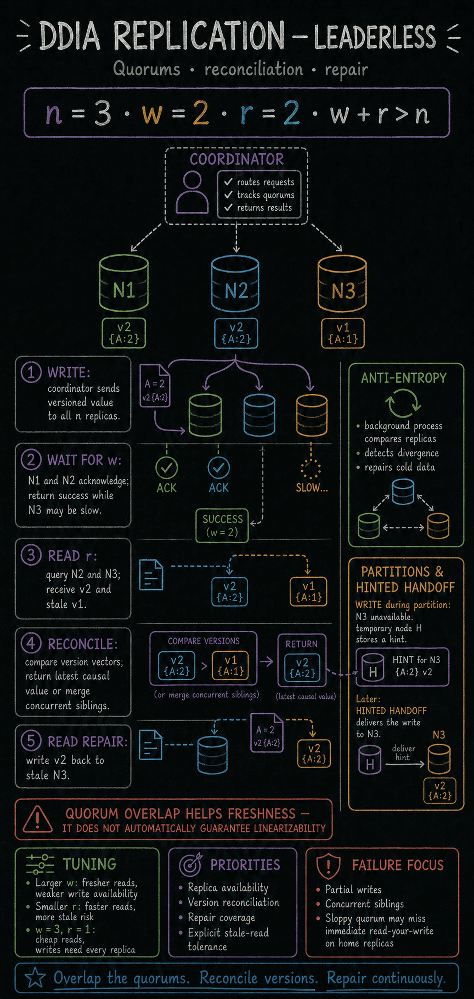

https://frosty110.github.io/js-drill/assets/system-design/infographics/ddia/ch05/leaderless.pngHow to keep copies of the same data on multiple machines connected by a network — for lower latency, higher availability, and read scalability — and the consistency problems that arise when those copies diverge.